공조냉동기계기사(구) (2018-04-28 기출문제)
1과목: 기계열역학
1. 이상기체에 대한 관계식 중 옳은 것은? (단,Cp, Cv는 정압 및 정적 비열, k는 비열비이고, R은 기체 상수이다.)
- Cp=Cv-R
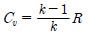
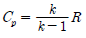
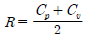
(정답률: 73%)

2. 온도가 T1인 고열원으로부터 온도가 T2인 저열원으로 열전도, 대류, 복사 등에 의해 Q 만큼 열전달이 이루어졌을 때 전체 엔트로피 변화량을 나타내는 식은?
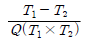
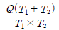
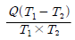
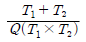
(정답률: 71%)
3. 1kg의 공기가 100℃를 유지하면서 가역등온 팽창하여 외부에 500kJ의 일을 하였다. 이때 엔트로피의 변화량은 약 몇 kJ/K인가?
- 1.895
- 1.665
- 1.467
- 1.340
(정답률: 67%)
4. 증기 압축 냉동 사이클로 운전하는 냉동기에서 압축기 입구, 응축기 입구, 증발기 입구의 엔탈피가 각각 387.2kJ/kg, 435.1kJ/kg, 241.8kJ/kg일 경우 성능계수는 약 얼마인가?
- 3.0
- 4.0
- 5.0
- 6.0
(정답률: 64%)
5. 습증기 상태에서 엔탈피 h를 구하는 식은? (단, hf는 포화액의 엔탈피, hg는 포화증기의 엔탈피, x는 건도이다.)
- h=hf+(xhg-hf)
- h=hf+x(hg-hf)
- h=hg+(xhf-hg)
- h=hg+x(hg-hf)
(정답률: 71%)
6. 다음의 열역학 상태량 중 종량적 상태량(extensive property)에 속하는 것은?
- 압력
- 체적
- 온도
- 밀도
(정답률: 74%)
7. 온도 150℃, 압력 0.5MPa의 공기 0.2kg이 압력이 일정한 과정에서 원래 체적의 2배로 늘어난다. 이 과정에서의 일은 약 몇 kJ인가? (단, 공기는 기체상수가 0.287kJ/(kgㆍK)인 이상기체로 가정한다.)
- 12.3kJ
- 16.5kJ
- 20.5kJ
- 24.3kJ
(정답률: 53%)
8. 천제연 폭로의 높이가 55m이고 주위와 열교환을 무시한다면 폭포수가 낙하한 후 수면에 도달할 때까지 온도 상승은 약 몇 K인가? (단, 폭포수의 비열은 4.2kJ/(kgㆍK)이다.)
- 0.87
- 0.31
- 0.13
- 0.68
(정답률: 49%)
9. 유체의 교축과정에서 Joule-Thomson 계수(μJ)가 중요하게 고려되는데 이에 대한 설명으로 옳은 것은?
- 등엔탈피 과정에 대한 온도변화와 압력변화의 비를 나타내며 μJ＜0인 경우 온도 상승을 의미한다.
- 등엔탈피 과정에 대한 온도변화와 압력변화의 비를 나타내며 μJ＜0인 경우 온도 강하를 의미한다.
- 정적 과정에 대한 온도변화와 압력변화의 비를 나타내며 μJ＜0인 경우 온도 상승을 의미한다.
- 정적 과정에 대한 온도변화와 압력변화의 비를 나타내며 μJ＜0인 경우 온도 강하를 의미한다.
(정답률: 45%)
10. Brayton 사이클에서 압축기 소요일은 175kJ/kg, 공급열은 627kJ/kg, 터빈 발생일은 406kJ/kg로 작동될 때 열효율은 약 얼마인가?
- 0.28
- 0.37
- 0.42
- 0.48
(정답률: 50%)
11. 마찰이 없는 실린더 내에 온도 500K, 비엔트로피 3kJ/(kgㆍK)인 이상기체가 2kg 들어있다. 이 기체의 비엔트로피가 10kJ/(kgㆍK)이 될 때까지 등온과정으로 가열한다면 가열량은 약 몇 kJ인가?
- 1400kJ
- 2000kJ
- 3500kJ
- 7000kJ
(정답률: 55%)
12. 매시간 20kg의 연료를 소비하여 74kW의 동력을 생산하는 가솔린 기관의 열효율은 약몇 %인가? (단, 가솔린의 저위발열량은 43470kJ/kg이다.)
- 18
- 22
- 31
- 43
(정답률: 65%)
13. 다음 중 이상적인 증기 터빈의 사이클인 랭킨 사이클을 옳게 나타낸 것은?
- 가역등온압축 → 정압가열 → 가역등온팽창 → 정압냉각
- 가역단열압축 → 정압가열 → 가역단열팽창 → 정압냉각
- 가역등온압축 → 정적가열 → 가역등온팽창 → 정적냉각
- 가역단열압축 → 정적가열 → 가역단열팽창 → 정적냉각
(정답률: 58%)
14. 피스톤-실린더 장치 내에 있는 공기가 0.3m3에서 0.1m3으로 압축되었다. 압축되는 동안 압력(P)과 체적(V) 사이에 P=aV-2의 관계가 성립하며, 계수 A = 6kPaㆍm6이다. 이 과정 동안 공기가 한 일은 약 얼마인가?
- -53.3kJ
- -1.1kJ
- 253kJ
- -40kJ
(정답률: 51%)
15. 이상적인 카르노 사이클의 열기관이 500℃인 열원으로부터 500kJ을 받고, 25℃에 열을 방출한다. 이 사이클의 일(W)과 효율(ηth)은 얼마인가?
- W= 307.2kJ, ηth= 0.6143
- W= 207.2kJ, ηth= 0.5748
- W= 250.3kJ, ηth= 0.8316
- W= 401.5kJ, ηth= 0.6517
(정답률: 66%)
16. 어떤 카르노 열기관이 100℃와 30℃ 사이에서 작동되며 100℃의 고온에서 100kJ 의 열을 받아 40kJ의 유용한 일을 한다면 이 열기관에 대하여 가장 옳게 설명한 것은?
- 열역학 제1법칙에 위배한다.
- 열역학 제2법칙에 위배한다.
- 열역학 제1법칙과 제2법칙에 모두 위배되지 않는다.
- 열역학 제1법칙과 제2법칙에 모두 위배된다.
(정답률: 54%)
17. 내부 에너지가 30kJ인 물체 열을 가하여 내부 에너지가 50kJ이 되는 동안에 외부에 대하여 10kJ의 일을 하였다. 이 물체에 가해진 열량은?
- 10kJ
- 20kJ
- 30kJ
- 60kJ
(정답률: 61%)
18. 그림과 같이 다수의 추를 올려놓은 피스톤이 장착된 실린더가 있는데, 실린더 내의 초기 압력은 300kPa, 초기 체적은 0.⑤m3이다. 이 실린더에 열을 가하면서 적절히 추를 제거하여 폴리트로픽 지수가 1.3인 폴리트로픽 변화가 일어나도록 하여 최종적으로 실린더 내의 체적이 0.2m3이 되었다면 가스가 한 일은 약 몇 kJ인가?
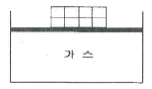
- 17
- 18
- 19
- 20
(정답률: 46%)
19. 온도 20℃에서 계기압력 0.183MPa의 타이어가 고속주행으로 온도 80℃로 상승할 때 압력은 주행 전과 비교하여 약 몇 kPa상승하는가? (단, 타이어의 체적은 변하지 않고, 타이어 내의 공기는 이상기체로 가정한다. 그리고 대기압은 101.3kPa이다.)
- 37kPa
- 58kPa
- 286kPa
- 445kPa
(정답률: 51%)
20. 랭킨 사이클의 열효율을 높이는 방법으로 틀린 것은?
- 복수기의 압력을 저하시킨다.
- 보일러 압력을 상승시킨다.
- 재열(reheat) 장치를 사용한다.
- 터빈 출구 온도를 높인다.
(정답률: 55%)
2과목: 냉동공학
21. 1대의 압축기로 증발온도를 -30℃ 이하의 저온도로 만들 경우 일어나는 현상이 아닌것은?
- 압축기 체적효율의 감소
- 압축기 토출 증기의 온도상승
- 압축기의 단위흡입체적당 냉동효과 상승
- 냉동능력당의 소요동력 증대
(정답률: 67%)
22. 제빙장치에서 135kg용 빙관을 사용하는 냉동장치와 가장 거리가 먼 것은?
- 헤어 핀 코일
- 브라인 펌프
- 공기교반장치
- 브라인 아지테이터(agitator)
(정답률: 38%)
23. 모세관 팽창밸브의 특징에 대한 설명으로 옳은 것은?(오류 신고가 접수된 문제입니다. 반드시 정답과 해설을 확인하시기 바랍니다.)
- 가정용 냉장고 등 소용량 냉동장치에 사용된다.
- 베이퍼록 현상이 발생할 수 있다.
- 내부균압관이 설치되어 있다.
- 증발부하에 따라 유량조절이 가능하다.
(정답률: 31%)
24. 증발기에서의 착상이 냉동장치에 미치는 영향에 대한 설명으로 옳은 것은?
- 압축비 및 성적계수 감소
- 냉각능력 저하에 따른 냉장실내 온도 강하
- 증발온도 및 증발압력 강하
- 냉동능력에 대한 소요동력 감소
(정답률: 46%)
25. 냉동능력이 7kW인 냉동장치에서 수냉식 응축기의 냉각수 입·출구 온도차가 8℃인 경우, 냉각수의 유량(kg/h)은? (단, 압축기의 소요동력은 2kW이다.)
- 630
- 750
- 860
- 964
(정답률: 46%)
26. 다음 냉동에 관한 설명으로 옳은 것은?
- 팽창밸브에서 팽창 전후의 냉매 엔탈피 값은 변한다.
- 단열 압축은 외부와 열의 출입이 없기 때문에 단열 압축 전후의 냉매 온도는 변한다.
- 응축기내에서 냉매가 버려야 하는 열은 현열이다.
- 현열에는 응고열, 융해열, 응축열, 증발열, 승화열 등이 있다.
(정답률: 54%)
27. 암모니아를 사용하는 2단압축 냉동기에 대한 설명으로 틀린 것은?
- 증발온도가 -30℃이하가 되면 일반적으로 2단압축 방식을 사용한다.
- 중간냉각기의 냉각방식에 따라 2단압축 1단팽창과 2단압축 2단팽창으로 구분한다.
- 2단압축 1단팽창 냉동기에서 저단측 냉매와 고단측 냉매는 서로 같은 종류의 냉매를 사용한다.
- 2단압축 2단팽창 냉동기에서 저단측 냉매와 고단측 냉매는 서로 다른 종류의 냉매를 사용한다.
(정답률: 53%)
28. P-h선도(압력-엔탈피)에서 나타내지 못하는 것은?
- 엔탈피
- 습구온도
- 건조도
- 비체적
(정답률: 60%)
29. 냉동장치가 정상적으로 운전되고 있을 때에 관한 설명으로 틀린 것은?
- 팽창밸브 직후의 온도가 직전의 온도보다 낮다.
- 크랭크 케이스 내의 유온은 증발온도보다 높다.
- 응축기의 냉각수 출구온도는 응축온도보다 높다.
- 응축온도는 증발온도보다 높다.
(정답률: 55%)
30. 만액식 증발기를 사용하는 R134a용 냉동장치가 아래와 같다. 이 장치에서 압축기의 냉매 순환량이 0.2kg/s이며, 이론 냉동 사이클의 각 점에서의 엔탈피가 아래표와 같을 때, 이론 성능 계수 (COP)는? (단, 배관의 열손실은 무시한다.)
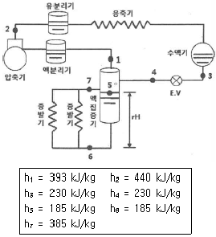
- 1.98
- 2.39
- 2.87
- 3.47
(정답률: 47%)
31. 냉동장치 내 공기가 혼입 되었을 때, 나타나는 현상으로 옳은 것은?
- 응축기에서 소리가 난다.
- 응축온도가 떨어진다.
- 토출온도가 높다.
- 증발압력이 낮아진다.
(정답률: 55%)
32. 빙축열 설비의 특징에 대한 설명으로 틀린 것은?
- 축열조의 크기를 소형화할 수 있다.
- 값싼 심야전력을 사용하므로 운전비용이 절감된다.
- 자동화 설비에 의한 최적화 운전으로 시스템의 운전효율이 높다.
- 제빙을 위한 냉동기 운전은 냉수취출을 위한 운전보다 증발온도가 높기 때문에 소비동력이 감소한다.
(정답률: 59%)
33. 공비혼합물(azeotrope)냉매의 특성에 관한 설명으로 틀린 것은?
- 서로 다른 할로카본 냉매들을 혼합하여 서로 결점이 보완되는 냉매를 얻을 수 있다.
- 응축압력과 압축비를 줄일 수 있다.
- 대표적인 냉매로 R407C와 R410A가 있다.
- 각각의 냉매를 적당한 비율로 혼합하면 혼합물의 비등점이 일치할 수 있다.
(정답률: 49%)
34. 암모니아 냉동장치에서 피스톤 압출량 120m3/h의 압축기가 아래 선도와 같은 냉동사이클로 운전되고 있을 때 압축기의 소요동력(kW)은?
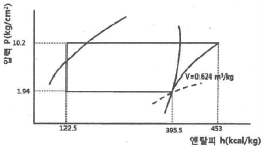
- 8.7
- 10.9
- 12.8
- 15.2
(정답률: 50%)
35. 다음 중 모세관의 압력강하가 가장 큰 경우는?
- 직경이 가늘고 길수록
- 직경이 가늘고 짧을수록
- 직경이 굵고 짧을수록
- 직경이 굵고 길수록
(정답률: 70%)
36. 물을 냉매로 하고 LiBr을 흡수제로 하는 흡수식 냉동장치에서 장치의 성능을 향상시키기 위하여 열교환기를 설치하였다. 이 열교환기의 기능을 가장 잘 나타낸 것은?
- 발생기 출구 LiBr 수용액과 흡수기 출구 LiBr 수용액의 열 교환
- 응축기 입구 수증기와 증발기 출구 수증기의 열 교환
- 발생기 출구 LiBr 수용액과 응축기 출구 물의 열 교환
- 흡수기 출구 LiBr 수용액과 증발기 출구 수증기의 열 교환
(정답률: 57%)
37. 다음 응축기 중 열통과율이 가장 작은 형식은? (단, 동일 조건 기준으로 한다.)
- 7통로식 응축기
- 입형 셸 튜브식 응축기
- 공랭식 응축기
- 2중관식 응축기
(정답률: 66%)
38. 흡수식 냉동기에서 재생기에 들어가는 희용액의 농도가 50%, 나오는 농용액의 농도가 65%일 때, 용액순환비는? (단, 흡수기의 냉각열량은 730kcal/kg이다.)
- 2.5
- 3.7
- 4.3
- 5.2
(정답률: 41%)
39. 냉매에 관한 설명으로 옳은 것은?
- 냉매표기 R+xyz형태에서 xyz는 공비 혼합 냉매 경우 400번대, 비공비 혼합 냉매 경우 500번대로 표시한다.
- R502는 R22와 R113과의 공비혼합냉매이다.
- 흡수식 냉동기는 냉매로 NH3와 R-11이 일반적으로 사용된다.
- R1234yf는 HFO계열의 냉매로서 지구온난화지수(GWP)가 매우 낮아 R134a의 대체 냉매로 활용 가능하다.
(정답률: 52%)
40. 냉동기 중 공급 에너지원이 동일한 것끼리 짝지어진 것은?
- 흡수 냉동기, 압축기 냉동기
- 증기분사 냉동기, 증기압축 냉동기
- 압축기체 냉동기, 증기분사 냉동기
- 증기분사 냉동기, 흡수 냉동기
(정답률: 53%)
3과목: 공기조화
41. 난방부하가 6500kcal/hr인 어떤 방에 대해 온수난방을 하고자 한다. 방열기의 상당방 열면적(m2)은?
- 6.7
- 8.4
- 10
- 14.4
(정답률: 59%)
42. 다음 중 감습(제습)장치의 방식이 아닌 것은?
- 흡수식
- 감압식
- 냉각식
- 압축식
(정답률: 48%)
43. 실내 설계온도 26℃인 사무실의 실내유효 현열부하는 20.42kW, 실내유효 잠열부하는 4.27kW 이다. 냉각코일의 장치노점온도는 13.5℃, 바이패스 팩터가 0.1일 때, 송풍량(L/s)은? (단, 공기의 밀도는 1.2kg/m3, 정압비열은 1.006kJ/kgㆍK이다.)
- 1350
- 1503
- 12530
- 13532
(정답률: 37%)
44. 유효온도(Effective Temperature)의 3요소는?
- 밀도, 온도, 비열
- 온도, 기류, 밀도
- 온도, 습도, 비열
- 온도, 습도, 기류
(정답률: 69%)
45. 배출가스 또는 배기가스 등의 열을 열원으로 하는 보일러는?
- 관류보일러
- 폐열보일러
- 입형보일러
- 수관보일러
(정답률: 72%)
46. 공기조화설비의 구성에서 각종 설비별 기기로 바르게 짝지어진 것은?
- 열원설비 – 냉동기, 보일러, 히트펌프
- 열교환설비 – 열교환기, 가열기
- 열매 수송설비 – 덕트, 배관, 오일펌프
- 실내유니트 – 토출구, 유인유니트, 자동제어기기
(정답률: 67%)
47. 덕트의 분기점에서 풍량을 조절하기 위하여 설치하는 댐퍼는?
- 방화 댐퍼
- 스플릿 댐퍼
- 피봇 댐퍼
- 터닝 베인
(정답률: 72%)
48. 냉방부하 계산 결과 실내취득열량은 qR, 송풍기 및 덕트 취득열량은 qF, 외기부하는 qO, 펌프 및 배관 취득열량은 qP일 때, 공조기 부하를 바르게 나타낸 것은?
- qR + qO + qP
- qF + qO + qP
- qR + qO + qF
- qR + qP + qF
(정답률: 61%)
49. 다음 공조방식 중에서 전공기 방식에 속하지 않는 것은?
- 단일덕트 방식
- 이중덕트 방식
- 팬코일 유닛방식
- 각층 유닛방식
(정답률: 73%)
50. 온수보일러의 수두압을 측정하는 계기는?
- 수고계
- 수면계
- 수량계
- 수위 조절기
(정답률: 56%)
51. 공기조화방식을 결정할 때에 고려할 요소로 가장 거리가 먼 것은?
- 건물의 종류
- 건물의 안정성
- 건물의 규모
- 건물의 사용목적
(정답률: 65%)
52. 증기난방방식에서 환수주관을 보일러 수면보다 높은 위치에 배관하는 환수배관방식은?
- 습식 환수방법
- 강제 환수방식
- 건식 환수방식
- 중력 환수방식
(정답률: 57%)
53. 온수난방설비에 사용되는 팽창탱크에 대한 설명으로 틀린 것은?
- 밀폐식 팽창탱크의 상부 공기층은 난방장치의 압력변동을 완화하는 역할을 할 수 있다.
- 밀폐식 팽창탱크는 일반적으로 개방식에 비해 탱크 용적을 크게 설계해야 한다.
- 개방식 탱크를 사용하는 경우는 장치내의 온수온도를 85℃이상으로 해야 한다.
- 팽창탱크는 난방장치가 정지하여도 일정압 이상으로 유지하여 공기침입 방지 역할을 한다.
(정답률: 58%)
54. 냉수코일 설계상 유의사항으로 틀린 것은?
- 코일의 통과 풍속은 2~3m/s로 한다.
- 코일의 설치는 관이 수평으로 놓이게 한다.
- 코일 내 냉수속도는 2.5m/s이상으로 한다.
- 코일의 출입구 수온 차이는 5~10℃ 전·후로 한다.
(정답률: 61%)
55. 가열로(加熱爐)의 벽 두께가 80mm이다. 벽의 안쪽과 바깥쪽의 온도차가 32℃, 벽의 면적은 60m2, 벽의 열전도율은 40kcal/mㆍhㆍ℃일 때, 시간당 방열량(kcal/hr)은?
- 7.6 x 105
- 8.9 x 105
- 9.6 x 105
- 10.2 x 105
(정답률: 66%)
56. 다음 중 온수난방과 가장 거리가 먼 것은?
- 팽창탱크
- 공기빼기밸브
- 관말트랩
- 순환펌프
(정답률: 62%)
57. 공기조화방식 중 혼합상자에서 적당한 비율로 냉풍과 온풍을 자동적으로 혼합하여 각실에 공급하는 방식은?
- 중앙식
- 2중 덕트방식
- 유인 유니트방식
- 각층 유니트방식
(정답률: 59%)
58. 다음의 공기조화 장치에서 냉각코일 부하를 올바르게 표현한 것은? (단, GF는 외기량(kg/h)이며, G는 전풍량(kg/h)이다.)
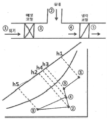
- GF(h1-h3)+GF(h1-h2)+G(h2-h5)
- G(h1-h2)-GF(h1-h3)+GF(h2-h5)
- GF(h1-h2)-GF(h1-h3)+G(h2-h5)
- G(h1-h2)+GF(h1-h3)+GF(h2-h5)
(정답률: 43%)
59. 온풍난방의 특징에 대한 설명으로 틀린 것은?
- 예열시간이 짧아 간헐운전이 가능하다.
- 실내 상하의 온도차가 커서 쾌적성이 떨어진다.
- 소음발생이 비교적 크다.
- 방열기, 배관설치로 인해 설비비가 비싸다.
(정답률: 64%)
60. 에어와셔를 통과하는 공기의 상태변화에 대한 설명으로 틀린 것은?
- 분무수의 온도가 입구공기의 노점온도보다 낮으면 냉각 감습된다.
- 순환수 분무하면 공기는 냉각가습되어 엔탈피가 감소한다.
- 증기분무를 하면 공기는 가열 가습되고 엔탈피도 증가한다.
- 분무수의 온도가 입구공기 노점온도보다 높고 습구온도보다 낮으면 냉각 가습된다.
(정답률: 38%)
4과목: 전기제어공학
61. 그림과 같이 철심에 두 개의 코일 C1, C2를 감고 코일 C1에 흐르는 전류 I에 ΔI만큼의 변화를 주었다. 이 때 일어나는 현상에 관한 설명으로 옳지 않은 것은?
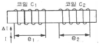
- 코일 C2에서 발생하는 기전력 e2는 렌츠의 법칙에 의하여 설명이 가능하다.
- 코일 C1에서 발생하는 기전력 e1은 자속의 시간 미분값과 코일의 감은 횟수의 곱에 비례한다.
- 전류의 변화는 자속의 변화를 일으키며, 자속의 변화는 코일 C1에 기전력 e1을 발생시킨다.
- 코일 C2에서 발생하는 기전력 e2와 전류 I의 시간 미분값의 관계를 설명해 주는 것이 자기인덕턴스이다.
(정답률: 55%)
62. 그림과 같은 제어에 해당하는 것은?
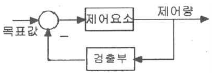
- 개방 제어
- 시퀀스 제어
- 개루프 제어
- 폐루프 제어
(정답률: 61%)
63. 물체의 위치, 방위, 자세 등의 기계적 변위를 제어량으로 하여 목표값의 임의의 변화에 항상 추종되도록 구성된 제어장치?
- 서보기구
- 자동조정
- 정치 제어
- 프로세스 제어
(정답률: 69%)
64. 다음 중 무인 엘리베이터의 자동제어로 가장 적합한 것은?
- 추종 제어
- 정치 제어
- 프로그램 제어
- 프로세스 제어
(정답률: 70%)
65. 다음 논리식을 간단히 한 것은?(오류 신고가 접수된 문제입니다. 반드시 정답과 해설을 확인하시기 바랍니다.)
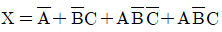
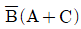
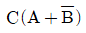
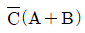
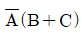
(정답률: 51%)
66. PLC프로그래밍에서 여러 개의 입력 신호 중 하나 또는 그 이상의 신호가 ON되었을 때 출력이 나오는 회로는?
- OR회로
- AND회로
- NOT회로
- 자기유지회로
(정답률: 70%)
67. 단상변압기 2대를 사용하여 3상 전압을 얻고자하는 결선방법은?
- Y결선
- V결선
- Δ결선
- Y-Δ결선
(정답률: 44%)
68. 직류기에서 전압정류의 역할을 하는 것은?
- 보극
- 보상권선
- 탄소브러시
- 리액턴스 코일
(정답률: 57%)
69. 전동기 2차측에 기동저항기를 접속하고 비례 추이를 이용하여 기동하는 전동기는?
- 단상 유도전동기
- 2상 유도전동기
- 권선형 유도전동기
- 2중 농형 유도전동기
(정답률: 48%)
70. 100[V], 40[W]의 전구에 0.4[A]의 전류가 흐른다면 이 전구의 저항은?
- 100[Ω]
- 150[Ω]
- 200[Ω]
- 250[Ω]
(정답률: 67%)
71. 공작기계의 부품 가공을 위하여 주로 펄스를 이용한 프로그램 제어를 하는 것은?
- 수치 제어
- 속도 제어
- PLC 제어
- 계산기 제어
(정답률: 57%)
72. 다음 중 절연저항을 측정하는데 사용되는 계측기는?
- 메거
- 저항계
- 켈빈브리지
- 휘스톤브리지
(정답률: 63%)
73. 검출용 스위치에 속하지 않는 것은?
- 광전스위치
- 액면스위치
- 리미트스위치
- 누름버튼스위치
(정답률: 62%)
74. 다음과 같은 회로에서 i2가 0 이 되기 위한 C의 값은 ? (단, L은 합성인덕턴스, M은 상호인덕턴스 이다.)
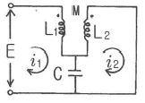
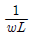
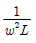
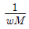
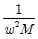
(정답률: 41%)
75. 오차 발생시간과 오차의 크기로 둘러싸인 면적에 비례하여 동작하는 것은?
- P 동작
- I 동작
- D 동작
- PD 동작
(정답률: 39%)
76. 개루프 전달함수
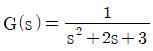
인 단위 궤환계에서 단위계단입력을 가하였을 때의 오프셋(off set)은?- 0
- 0.25
- 0.5
- 0.75
(정답률: 33%)
77. 저항 8[Ω]과 유도리액턴스 6[Ω]이 직렬접속된 회로의 역률은?
- 0.6
- 0.8
- 0.9
- 1
(정답률: 48%)
78. 온도 보상용으로 사용되는 소자는?
- 서미스터
- 바리스터
- 제너다이오드
- 버랙터다이오드
(정답률: 71%)
79. 다음과 같은 회로에서 a, b양단자 간의 합성저항은? (단, 그림에서의 저항의 단위는 [Ω]이다.)
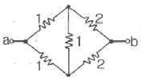
- 1.0[Ω]
- 1.5[Ω]
- 3.0[Ω]
- 6.0[Ω]
(정답률: 61%)
80. 온 오프(on-off) 동작에 관한 설명으로 옳은 것은?
- 응답속도는 빠르나 오프셋이 생긴다.
- 사이클링은 제거할 수 있으나 오프셋이 생긴다.
- 간단한 단속적 제어동작이고 사이클링이 생긴다.
- 오프셋은 없앨 수 있으나 응답시간이 늦어질 수 있다.
(정답률: 60%)
5과목: 배관일반
81. 도시가스 배관 시 배관이 움직이지 않도록 관 지름 13 ~ 33mm 미만의 경우 몇 m마다 고정 장치를 설치해야 하는가?
- 1m
- 2m
- 3m
- 4m
(정답률: 73%)
82. 냉매배관에 사용되는 재료에 대한 설명으로 틀린 것은?
- 배관 선택 시 냉매의 종류에 따라 적절한 재료를 선택해야 한다.
- 동관은 가능한 이음매 있는 관을 사용한다.
- 저압용 배관은 저온에서도 재료의 물리적 성질이 변하지 않는 것으로 사용한다.
- 구부릴 수 있는 관은 내구성을 고려하여 충분한 강도가 있는 것을 사용한다.
(정답률: 72%)
83. 동관의 호칭경이 20A일 때 실제 외경은?
- 15.87mm
- 22.22mm
- 28.57mm
- 34.93mm
(정답률: 61%)
84. 팬코일 유닛방식의 배관방식에서 공급관이 2개이고 환수관이 1개인 방식으로 옳은 것은?
- 1관식
- 2관식
- 3관식
- 4관식
(정답률: 67%)
85. 방열기 전체의 수저항이 배관의 마찰손실에 비해 큰 경우 채용하는 환수방식은?
- 개방류 방식
- 재순환 방식
- 역귀환 방식
- 직접귀환 방식
(정답률: 39%)
86. 증기와 응축수의 온도 차이를 이용하여 응축수를 배출하는 트랩은?
- 버킷 트랩(bucket Trap)
- 디스크 트랩(disk Trap)
- 벨로스 트랩(bellows Trap)
- 플로트 트랩(float Trap)
(정답률: 53%)
87. 배관의 분리, 수리 및 교체가 필요할 때 사용하는 관 이음재의 종류는?
- 부싱
- 소켓
- 엘보
- 유니언
(정답률: 55%)
88. 급수량 산정에 있어서 시간 평균예상 급수량(Qh)이 3000L/h였다면, 순간 최대 예상 급수량(Qp)은?
- 70 ~ 100 L/min
- 150 ~ 200 L/min
- 225 ~ 250 L/min
- 275 ~ 300 L/min
(정답률: 57%)
89. 증기난방법에 관한 설명으로 틀린 것은?
- 저압 증기난방에 사용하는 증기의 압력은 0.15 ~ 0.35kg/cm2정도이다.
- 단관 중력 환수식의 경우 증기와 응축수가 역류하지 않도록 선단 하향 구배로 한다.
- 환수주관을 보일러 수면보다 높은 위치에 배관한 것은 습식환수관식이다.
- 증기의 순환이 가장 빠르며 방열기, 보일러 등의 설치위치에 제한을 받지 않고 대규모 난방용으로 주로 채택되는 방식은 진공환수식이다.
(정답률: 58%)
90. 배관의 자중이나 열팽창에 의한 힘 이외에 기계의 진동, 수격작용, 지진 등 다른 하중에 의해 발생하는 변위 또는 진동을 억제시키기 위한 장치는?
- 스프링 행거
- 브레이스
- 앵커
- 가이드
(정답률: 47%)
91. 펌프를 운전할 때 공동현상(캐비테이션)의 발생 원인으로 가장 거리가 먼 것은?
- 토출양정이 높다.
- 유체의 온도가 높다.
- 날개차의 원주속도가 크다.
- 흡입관의 마찰저항이 크다.
(정답률: 45%)
92. 급수방식 중 대규모의 급수 수요에 대응이 용이하고 단수 시에도 일정한 급수를 계속할 수 있으며 거의 일정한 압력으로 항상 급수되는 방식은?
- 양수 펌프식
- 수도 직결식
- 고가 탱크식
- 압력 탱크식
(정답률: 60%)
93. 증기트랩의 종류를 대분류 한 것으로 가장 거리가 먼 것은?
- 박스 트랩
- 기계적 트랩
- 온도조절 트랩
- 열역학적 트랩
(정답률: 60%)
94. 열팽창에 의한 배관의 이동을 구속 또는 제한하기 위해 사용되는 관 지지장치는?
- 행거(hanger)
- 서포트(support)
- 브레이스(brace)
- 레스트레인트(restraint)
(정답률: 59%)
95. 그림과 같은 입체도에 대한 설명으로 맞는 것은?
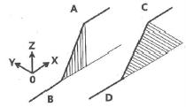
- 직선 A와 B, 직선 C와 D는 각각 동일한 수직평면에 있다.
- A와 B는 수직높이 차가 다르고, 직선 C와 D는 동일한 수평평면에 있다.
- 직선 A와 B, 직선 C와 D는 각각 동일한 수평평면에 있다.
- 직선 A와 B, 동일한 수평평면에, 직선 C와 D는 동일한 수직평면에 있다.
(정답률: 61%)
96. 급수배관 시공에 관한 설명으로 가장 거리가 먼 것은?
- 수리와 기타 필요시 관속의 물을 완전히 뺄 수 있도록 기울기를 주어야 한다.
- 공기가 모여 있는 곳이 없도록 하여야 하며, 공기가 모일 경우 공기빼기 밸브를 부착한다.
- 급수관에서 상향 급수는 선단 하향 구배로 하고, 하향 급수에서는 선단 상향 구배로 한다.
- 가능한 마찰손실이 작도록 배관하며 관의 축소는 편심 레듀서를 써서 공기의 고임을 피한다.
(정답률: 68%)
97. 베이퍼록 현상을 방지하기 위한 방법으로 틀린 것은?
- 실린더 라이너의 외부를 가열한다.
- 흡입배관을 크게 하고 단열 처리한다.
- 펌프의 설치위치를 낮춘다.
- 흡입관로를 깨끗이 청소한다.
(정답률: 62%)
98. 저압 증기난방 장치에서 적용되는 하트포드 접속법(Hartford connection)과 관련된 용어로 가장 거리가 먼 것은?
- 보일러주변 배관
- 균형관
- 보일러수의 역류방지
- 리프트 피팅
(정답률: 55%)
99. 배수 및 통기설비에서 배관시공법에 관한 주의사항으로 틀린 것은?
- 우수 수직관에 배수관을 연결해서는 안된다.
- 오버플로우관은 트랩의 유입구측에 연결해야 한다.
- 바닥 아래에서 빼내는 각 통기관에는 횡주부를 형성시키지 않는다.
- 통기 수직관은 최하위의 배수 수평지관보다 높은 위치에서 연결해야 한다.
(정답률: 41%)
100. 온수난방 배관에서 에어 포켓(air pocket)이 발생될 우려가 있는 곳에 설치하는 공기빼기밸브의 설치위치로 가장 적절한 것은?
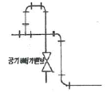
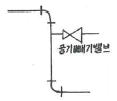
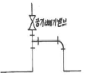
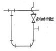
(정답률: 64%)